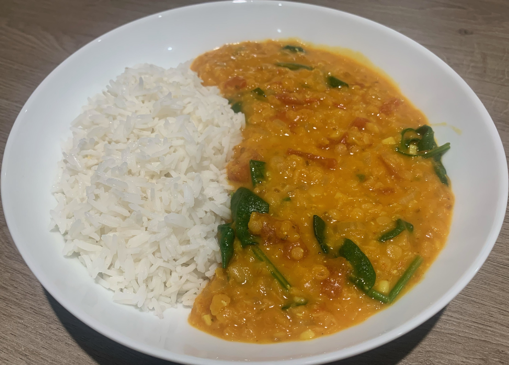

Lentil Dhal is a type of curry made with coconut milk, various spices, chopped tomatoes, and most importantly of all, lentils. Lentils are legumes that are high in protein, and full of starch which make them perfect for curries as they thicken the curry as they release said starch.
This dish is one of the most flavoursome on the site due to the amount of fresh spices that are added. These combine to make a truly satisfying meal. I prefer to have mine quite spicy, but that is completely up to preference. If you don't care for too much spice, simply reduce the amount of chilli in the dish.
Watch the video below for the perfect example of how to make a Dhal!
Below, I will detail the ingredients and method for making my take on Tom Kha Gai. I removed the Coconut Milk to give it a thinner, less creamy consistency but this is entirely based on preference. Most ingredients will be available at your local supermarket, however, some may be difficult to find.
Ingredients:
Coriander Seeds - 1 Teaspoon
Ground Turmeric - 3 Teaspoons
Garam Masala - 2 Teaspoons
Chopped Tomatoes - 1 400ml Can
Coconut Milk - 1 400ml Can
Vegetable Stock - 500ml
Salt & Pepper - To taste
Spinach - 2 Handfuls
Red Lentils - 200g
Coconut Oil - 1 Tablespoon
2 White Onions - Diced
5 Garlic Cloves - Finely Chopped
Fresh Ginger - 1 Tablespoon Peeled & Grated
Finger Chilli - 4 Finely Chopped
Cumin Seeds - 1 Teaspoon
Mustard Seeds - 1 Teaspoon
Method:
Grind up the mustard seeds, cumin seeds and coriander seeds using a pestle and mortar. If you don't have one, you can use the end of a rolling pin and a bowl. Add the turmeric and garam masala to this mixture.
Add the lentils to a bowl of cold water and allow to soak for 15 minutes (This will reduce the required cooking time by half).
Heat up the Coconut Oil on medium-high heat and add the onion - cooking for 4/5 minutes. Then, add the Garlic, finger chilli's and ginger, allowing to cook for another 3 minutes.
Next, add the spice mixture from step 1 and allow to cook out for another minute, stirring occasionally.
Next, add the stock, coconut milk, the canned tomatoes, and the lentils, stirring to combine. Bring the mixture up in temperature, and let it simmer for 15-20 minutes until the lentils have thickened it by releasing their starch.
Season with salt and pepper to taste and stir in the spinach until it wilts.
Serve with rice or naan bread.
The Finished Dish
Below is my effort at the Lentil Dhal. As you can see it is creamy, with a beautiful colour, and it tasted as good as it looks! Overall, this recipe takes around 25 minutes of preparation time, along with 30-35 minutes of cooking time so it is quite a quick meal for something so delicious. I would definitely recommend giving this recipe a go as it is perfect for a quick meal, or even a family get together. Hover over the image to enlarge!

Click the button below to keep track of the number of times you have made the dish on this page. The number of times you click the button will be stored for the next time you come back to the site!
Have you tried making this dish? Tell us what you thought!